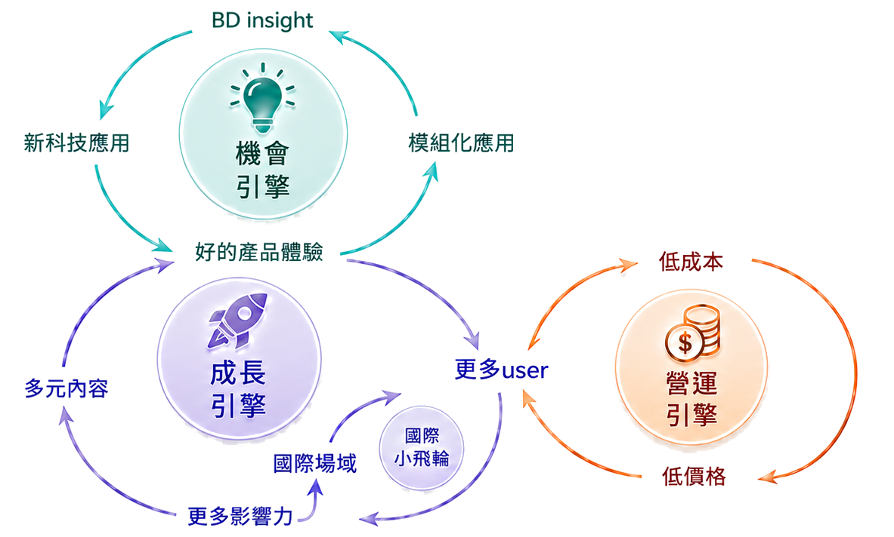
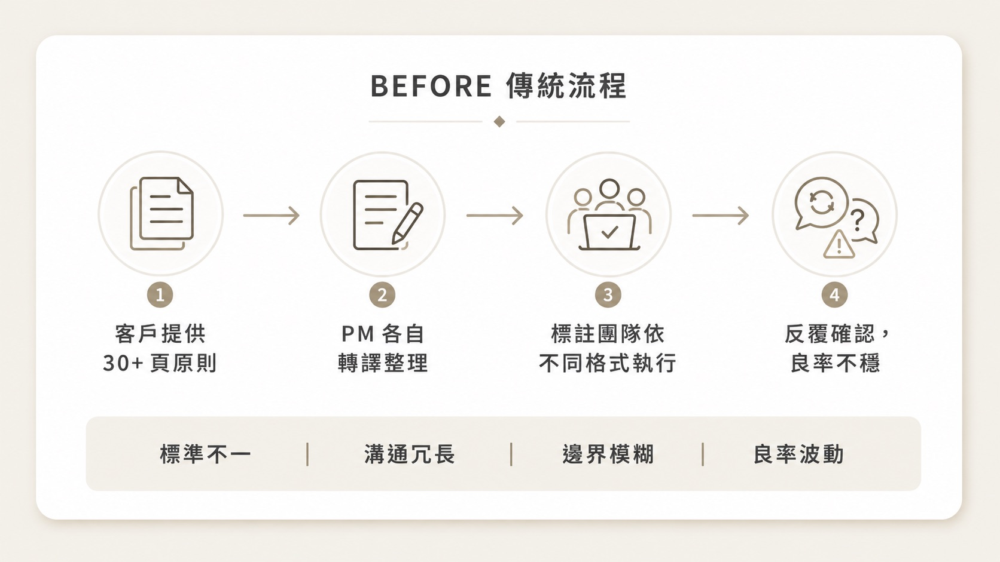
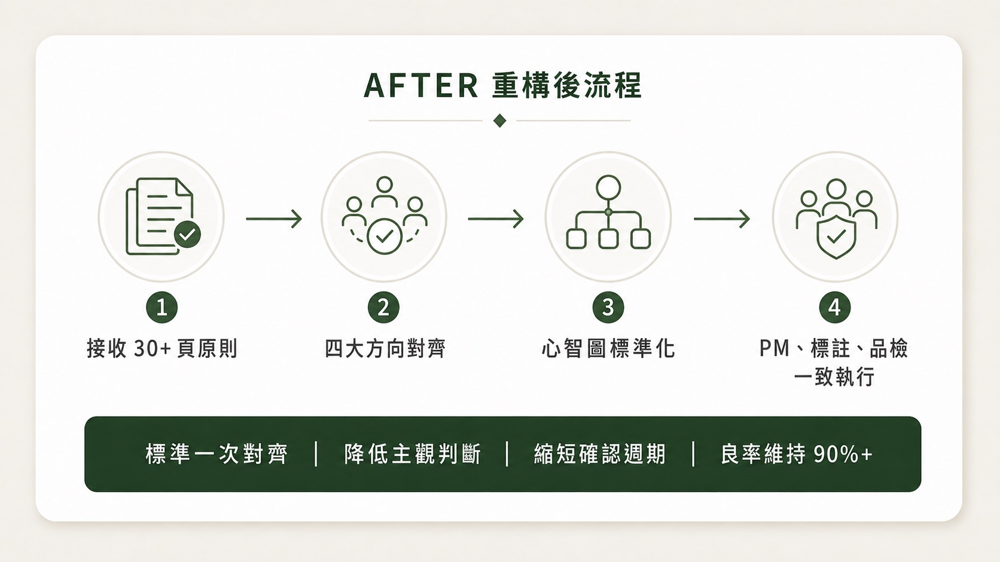
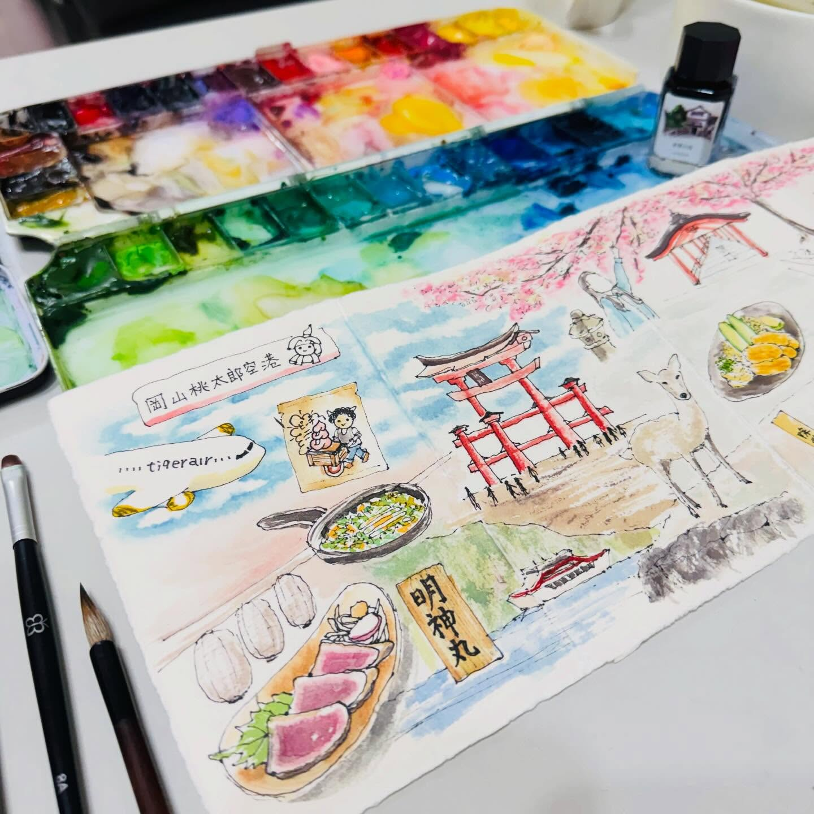
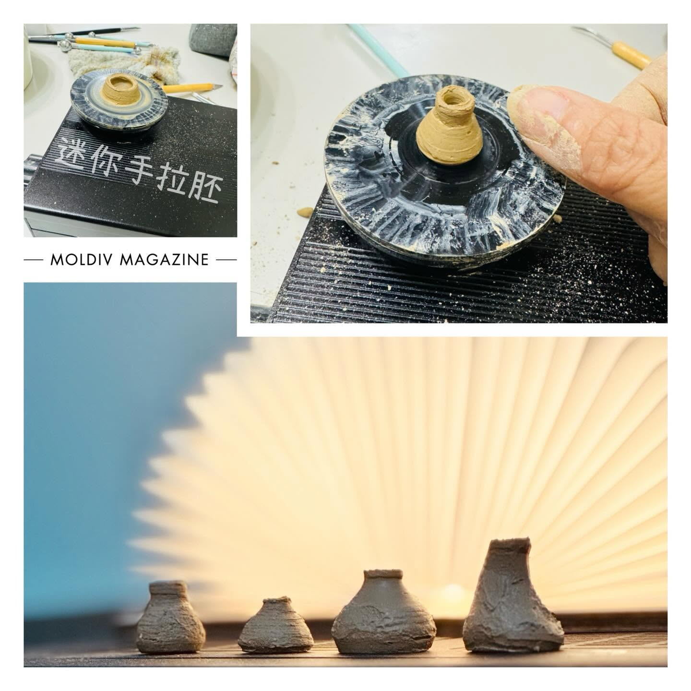

機會引擎
洞察商機，導入新科技與模組化應用，為產品創造更多機會。
AI PRODUCT MANAGER · EDTECH · EXPERIENCE DESIGN
|
我將 AI 工作流程、AR 教育產品與提案，
轉化為可落地、可擴散、可衡量的使用體驗。

洞察商機，導入新科技與模組化應用，為產品創造更多機會。
提供多元內容與國際領域，擴大影響力，驅動用戶成長。
以低成本為低價格優化營運效率，強化市場競爭力。
精選專案
從產品定位、體驗流程到落地執行，整理幾個我深度參與的代表性作品。
AI 資料驅動流程重構
把鬆散的人工標註流程，重新整理成可對齊、可追蹤、可穩定交付的工作系統。


重構資料標註流程，縮短人工整理與交付往返時間。
透過品質門檻與審核規則，維持穩定輸出品質。
從需求、標註、審核到交付建立明確節點。
其他成果
收錄較小型但能看見方法與能力的作品，包含工具、研究、流程與提案。
繪畫不是逃離工作，而是一種觀看訓練：看見結構、留白、節奏，以及數據難以說出的感受。


“
創造力，是我理解世界與人的方式，也是設計更好體驗的養分。